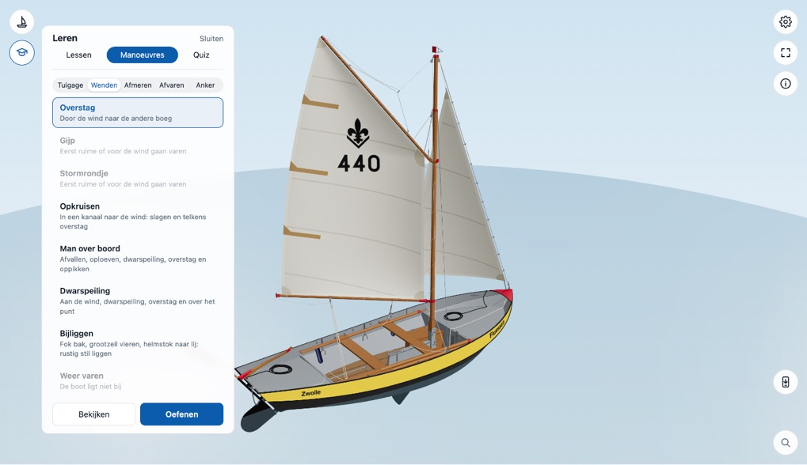
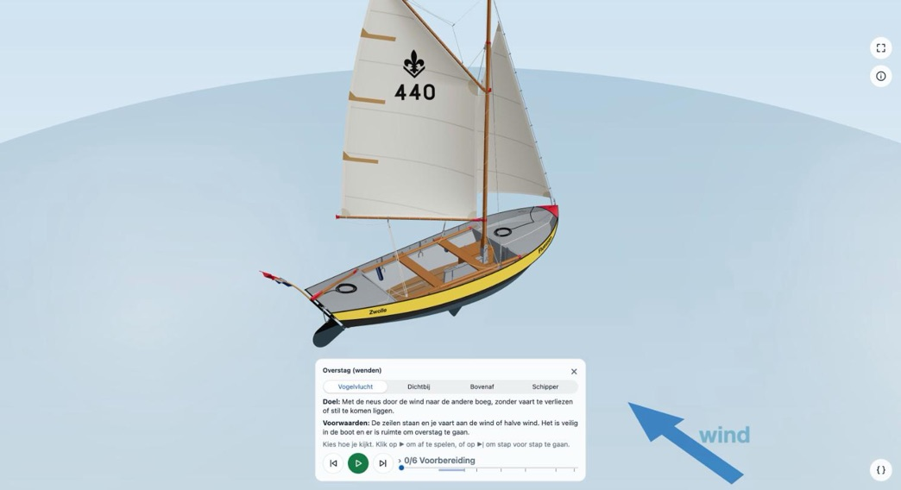
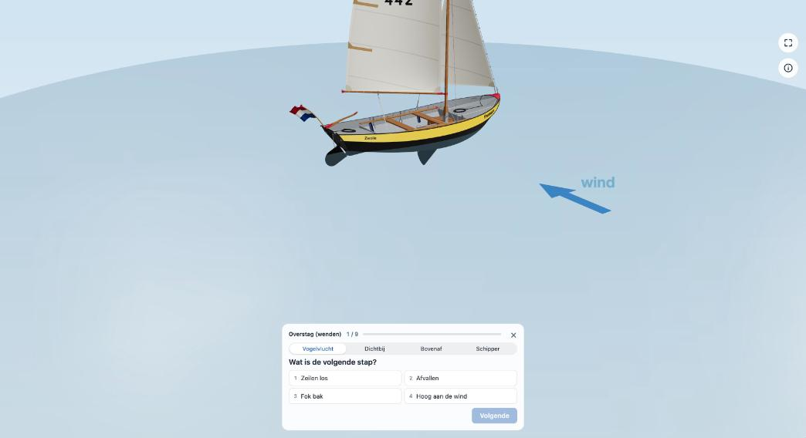

Manoeuvres
Alle manoeuvres uit de lesstof: ze afspelen en bekijken, of ze stap voor stap zelf oefenen.
Een manoeuvre kiezen


Open Leren (de studentenmuts) en kies Manoeuvres. Ze staan in groepen:
- Tuigage: mast zetten en strijken, zeilen aanslaan, hijsen, reven, strijken en afslaan, zeil- en nachtklaar maken.
- Wenden: overstag, gijp, stormrondje, opkruisen, man over boord, dwarspeiling, bijliggen en weer varen.
- Afmeren: sliplanding en opschieter aan hogerwal, sliplanding en voor top en takel aan een langswal, aanleggen aan lagerwal, verhalen.
- Afvaren: van hogerwal, langswal en lagerwal, en kop in de wind leggen.
- Anker: ankeren en anker op, met en zonder zeilen.
- In de modus roeien: Roeien, met achtje, afvaren, drie manieren van aanleggen, man overboord, ankeren en anker op.
Kan een manoeuvre nu niet, dan is hij grijs en staat eronder waarom, bijvoorbeeld Eerst ruime of voor de wind gaan varen. Een vinkje betekent dat je hem al eens foutloos hebt geoefend.
De stappen volgen de Kielboot-lesboeken van Scouting Sint Maarten. Waar die niets over een manoeuvre zeggen, volgen ze het CWO-zeilinstructieboek van de Katwijkse Zeeverkenners, en bij roeien CWO Roeien van Scouting Nederland.
Bekijken


Met Bekijken begint de manoeuvre bij stap 0: de kaart toont het doel en de voorwaarden, en je kiest hoe je kijkt. Druk op de groene afspeelknop en ze gaat stap voor stap, met na elke stap even tijd om te lezen; of klik zelf stap voor stap door. De commando's staan in tekstballonnen en het spoor van de boot wordt op het water getekend. In de kaart onderin:
- Het doel: in één zin waar de manoeuvre om draait, bijvoorbeeld bij de sliplanding aan hogerwal Langzaam en met controle aankomen. Is de manoeuvre begonnen, dan staat daar waarom je de stap doet die bezig is, bijvoorbeeld bij Klaar om te wenden: zo weet iedereen in de boot wat er gaat gebeuren.
- De voorwaarden: hoe de boot erbij moet liggen of varen voor je begint, bijvoorbeeld bij overstag je vaart aan de wind of halve wind, het is veilig in de boot en er is ruimte.
- Vanwaar je kijkt: Vogelvlucht, Dichtbij (bij de onderdelen van elke stap), Bovenaf (de wind komt van boven) of Schipper (vanaf het roer).
- De stappenbalk: vorige stap, afspelen of pauzeren, volgende stap, en een schuif over de hele manoeuvre. De naam van de stap staat erbij, en bij sommige stappen een tip, zoals Houd het roer recht, ook als je verlijert.
- Het kruisje: stopt de manoeuvre en zet de boot terug waar hij begon. Aan het eind staat er Klaar.
Oefenen


Met Oefenen blijft de boot staan en is de vraag bij elke stap: Wat is de volgende stap? Kies een van de vier antwoorden (of druk op 1 tot 4) en ga verder met Volgende (Enter). Een goed antwoord speelt de stap af; bij een fout zie je wat het wel had moeten zijn. Bij een fout die vaak gemaakt wordt, zoals Opsturen omdat je verlijert, staat erbij waarom het fout is. Ook hier staat bovenaan het doel. Bij een wending of gijp zegt de eerste vraag welke koers je vaart, en na een antwoord zie je de tip bij die stap, als die er een heeft. Aan het eind zie je hoeveel stappen je goed had.
Bij een manoeuvre onder zeil blijft de camera in Vogelvlucht op één plek, met fok, grootzeil en roer in beeld, bij bekijken en bij oefenen. Alleen bij kleine handelingen, zoals reven of de vallen, gaat hij per stap dichtbij kijken.
Kies je een andere modus terwijl een manoeuvre bezig is, dan stopt hij, net als met het kruisje.
Alle stappen op een rij
Voor elke manoeuvre staan de voorwaarden en de stappen, met waar ze vandaan komen, in het overzicht van de manoeuvres. Waarom je elke stap doet, staat per manoeuvre in de uitleg per stap. Klopt er iets niet met hoe jullie het leren? Laat het weten via Melden.